Notificación Roja / Red Notice
Emitida: 12/02/2026
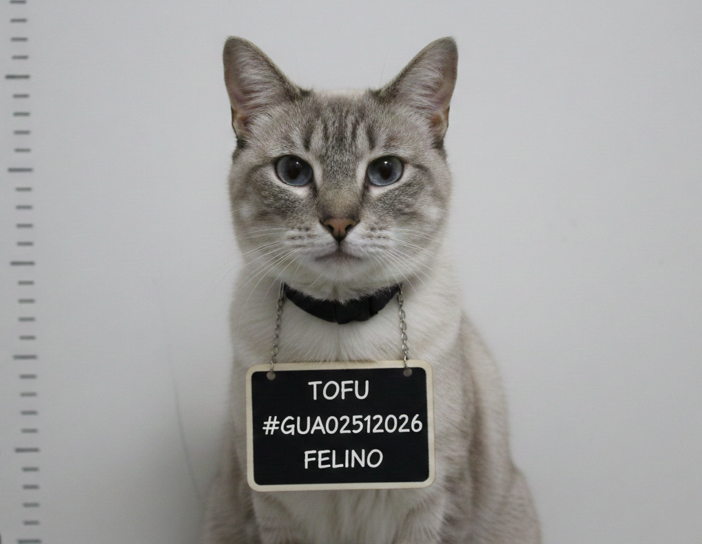
Cargos Formales
- Micción premeditada y con alevosía sobre cama ajena — Art. 274 Cód. Penal Felino Ref: CPF-274-A • Delito Grave contra la Higiene Doméstica
- Daño intencional a propiedad privada (sábanas, colchón y dignidad del afectado) Ref: CPF-156-B • Destrucción de Bienes de Confort
- Conducta antisocial felina reiterada en domicilio ajeno Ref: CPF-089-C • Alteración del Orden Doméstico
- Fingir inocencia posterior al acto delictivo mediante ronroneo y cara tierna Ref: CPF-312-D • Manipulación Emocional Agravada
- Huida de la escena del crimen sin mostrar remordimiento alguno Ref: CPF-401-E • Evasión de Responsabilidad Felina
Reporte del Incidente
El día 10 de febrero de 2026, aproximadamente a las 03:47 horas, el sujeto identificado como TOFU (alias "El Mea Camas"), de especie felina y bajo la tutela legal de SHARAI MELANIE MARQUEZ, ingresó de manera clandestina a la habitación de ANGEL MARQUEZ, hermano de su dueña, en el domicilio familiar ubicado en North Hills, California, Estados Unidos.
Según el testimonio del afectado, ANGEL MARQUEZ llegó a su hogar después de una larga jornada y descubrió que su cama había sido orinada deliberadamente y con total premeditación por el sujeto TOFU, causando daños irreparables al colchón, sábanas y la estabilidad emocional de la víctima.
Análisis forenses del laboratorio científico del LAPD confirman que el pH y composición química de la muestra coinciden al 99.7% con el perfil biológico del sospechoso. El sujeto fue captado por cámaras de seguridad domiciliarias abandonando la escena con una actitud descrita por peritos como "completamente indiferente y carente de cualquier tipo de arrepentimiento".
La víctima, ANGEL MARQUEZ, declaró ante las autoridades: "Llegué a mi cuarto y todo estaba mojado. Él estaba sentado en la puerta mirándome fijamente, como si nada. Ese gato no tiene alma."
Tras el incidente, el sujeto TOFU es sospechoso de haber huido a la República de Guatemala, posiblemente utilizando documentos de identidad falsificados. El Ministerio Público de Guatemala ha solicitado la colaboración de INTERPOL para la localización y captura internacional del sujeto, quien se presume se encuentra prófugo en territorio guatemalteco, posiblemente escondido debajo de algún mueble o durmiendo sobre ropa limpia ajena.
Evidencia Fotográfica — Escena del Crimen
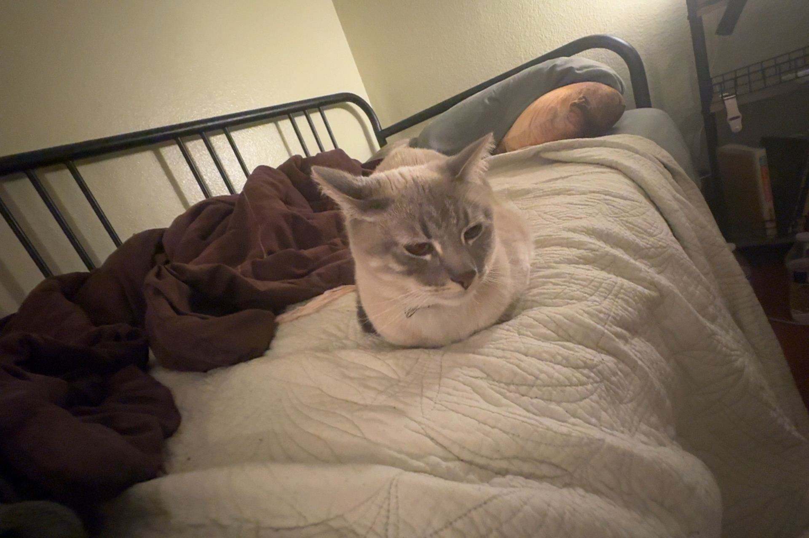
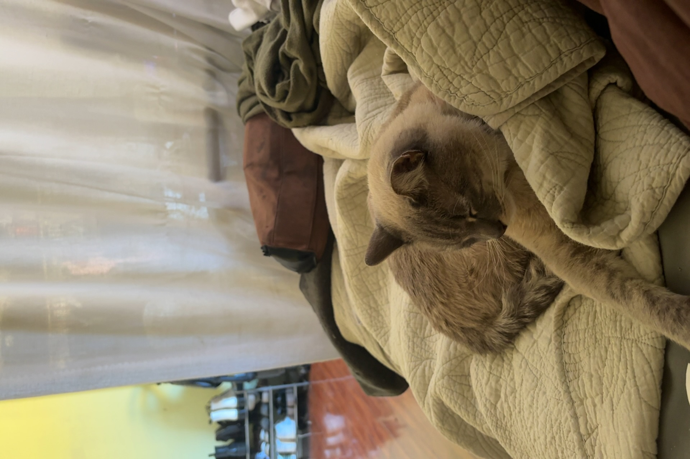
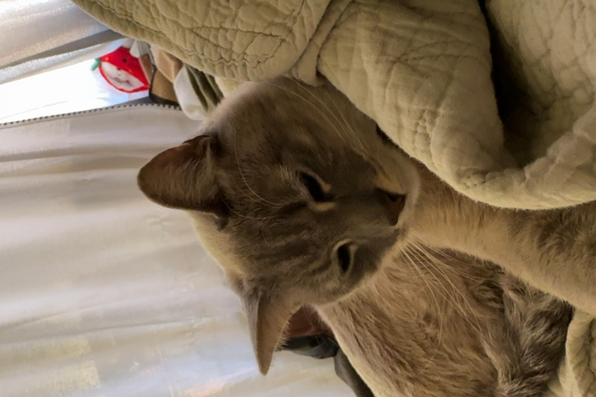
Vigilancia y Reconocimiento del Sospechoso
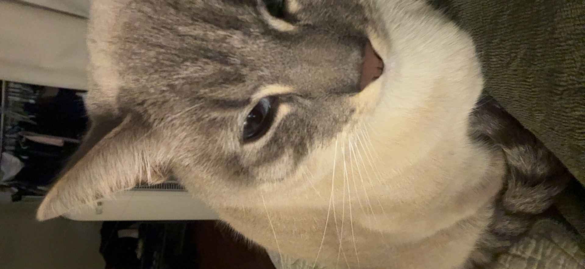
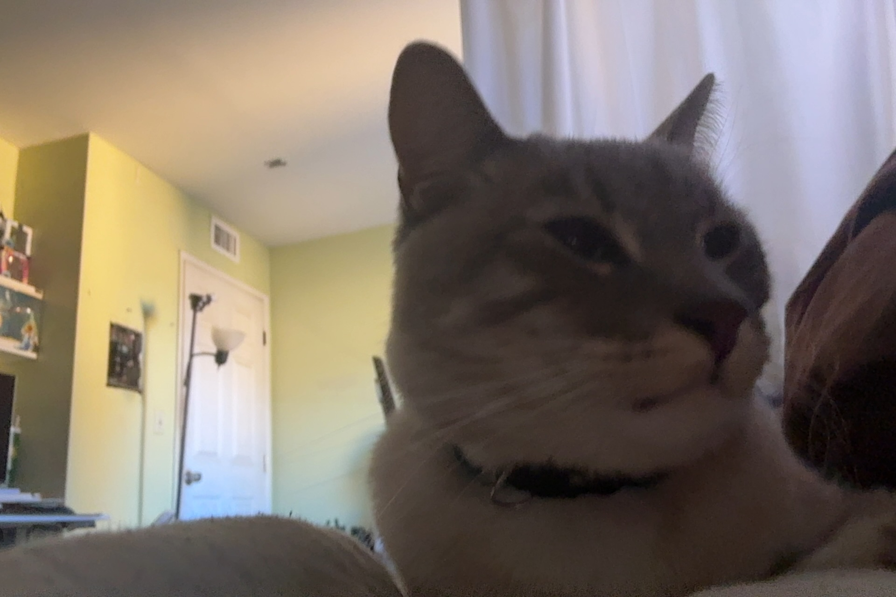
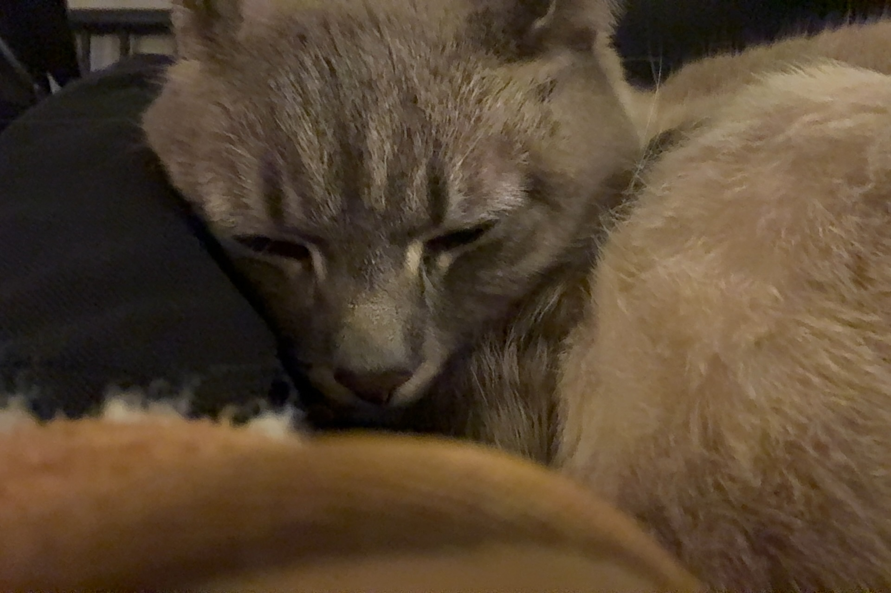
Persona de Interés — Presunta Encubridora
Las autoridades han identificado a SHARAI MELANIE MARQUEZ, dueña y tutora legal del sujeto TOFU, como presunta encubridora de sus actividades delictivas. A pesar de múltiples reportes presentados por su hermano ANGEL MARQUEZ sobre la conducta antisocial del felino, la sospechosa ha mostrado una negación sistemática de los hechos, argumentando repetidamente que "él no fue", "es que estaba estresado" y "mi bebé no haría eso".
Se le acusa de: encubrimiento felino agravado, obstrucción a la justicia doméstica, suministro continuo de croquetas premium al prófugo a pesar de la orden de captura vigente, y posible colaboración en la huida del sujeto hacia Guatemala.
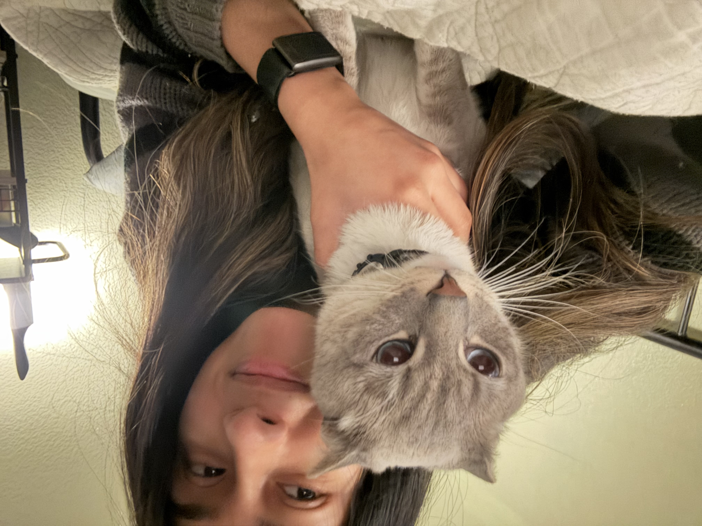
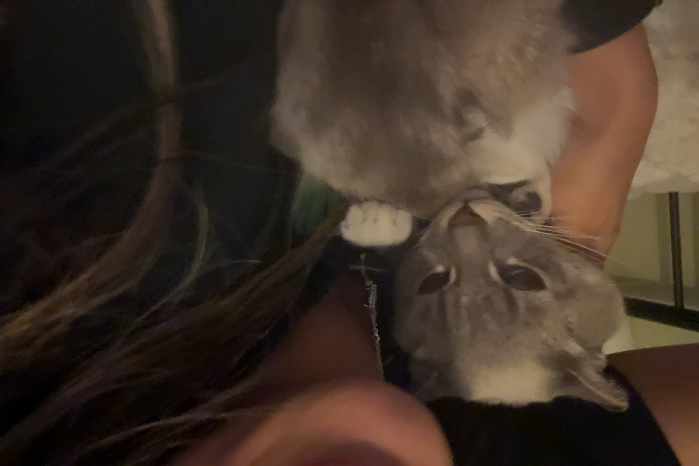
Comportamiento Post-Delictivo
Tras cometer el acto de micción premeditada, el sujeto TOFU fue observado realizando las siguientes actividades como si nada hubiera ocurrido: dormir sobre ropa limpia, acicalarse con total calma, pedir comida con insistencia y ronronear de manera manipuladora cuando se le confrontaba con la evidencia. Se sospecha que SHARAI MELANIE MARQUEZ facilitó su huida posterior hacia Guatemala.
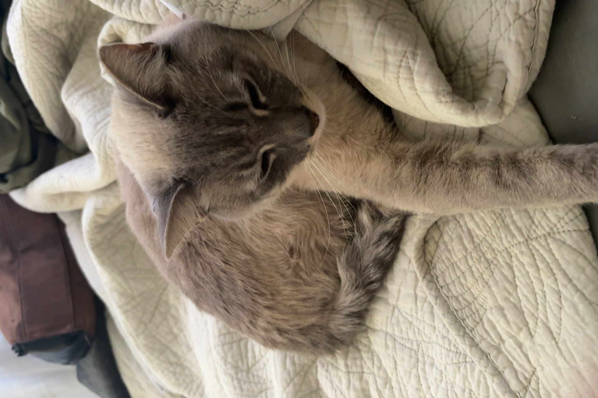
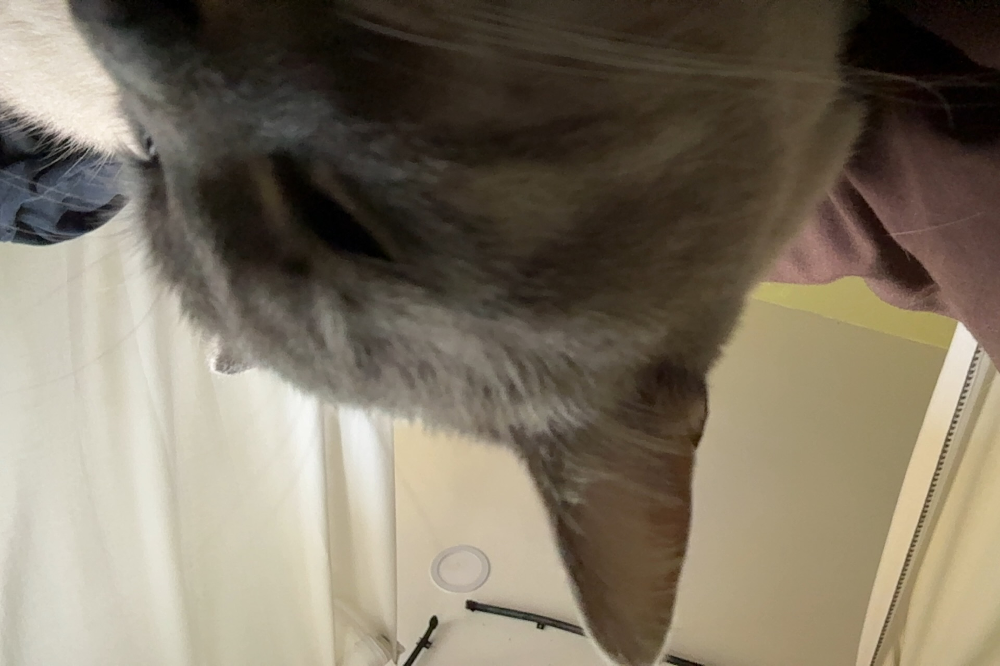
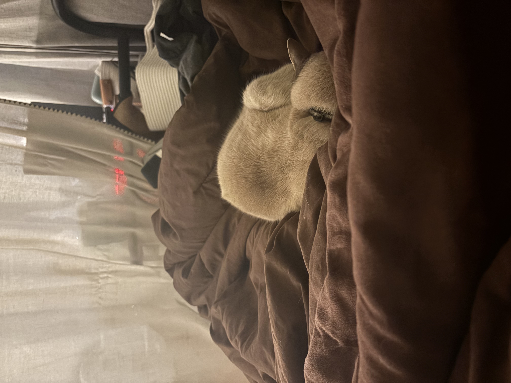
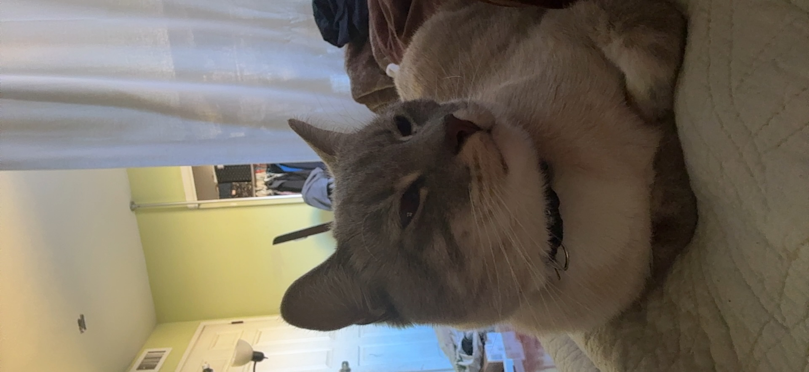
Fotografías Adicionales de Identificación
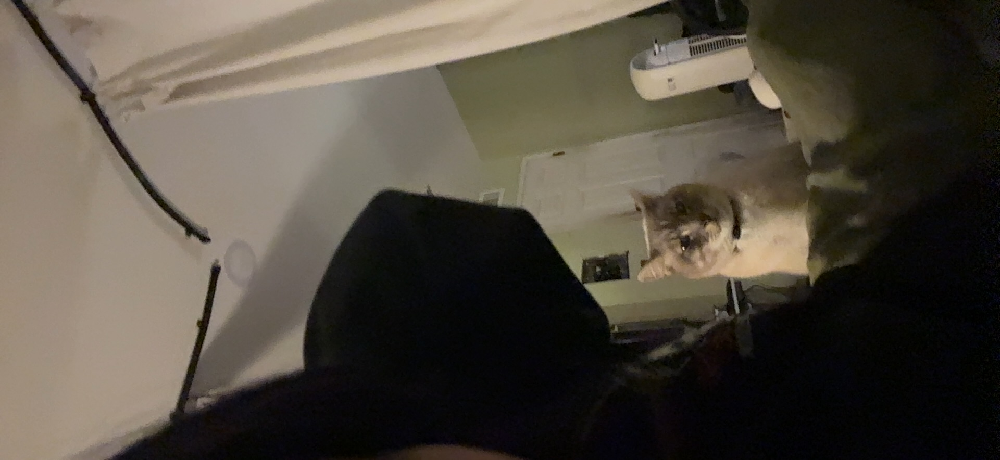
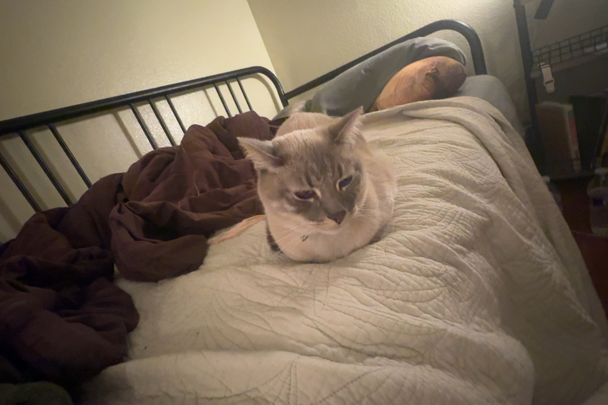
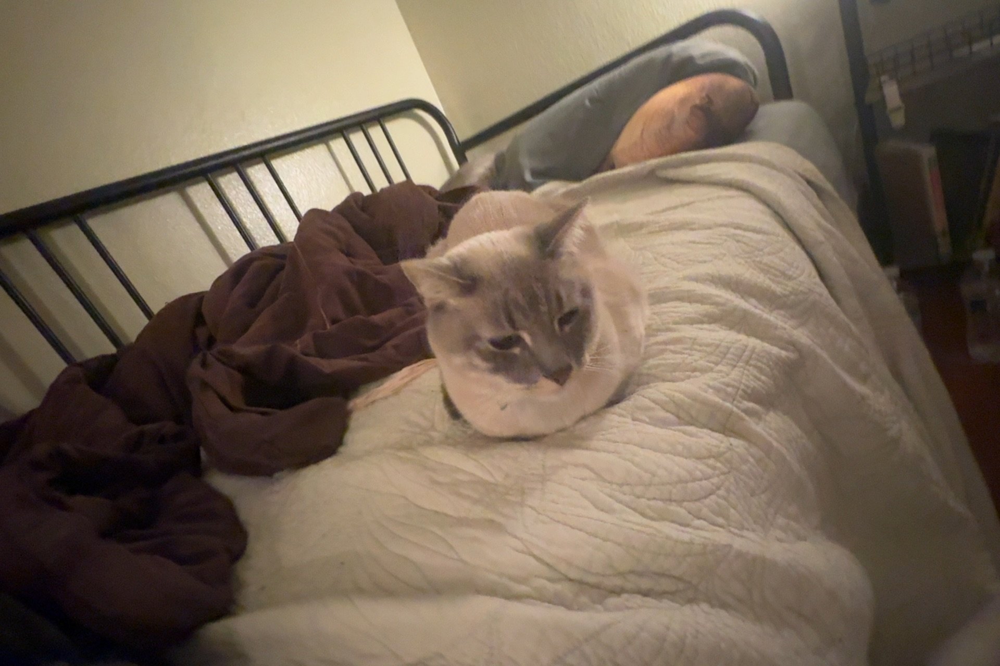